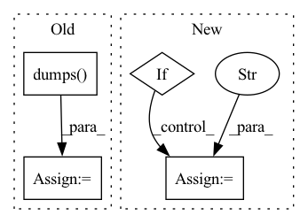

Pattern ID :15711

Before Change
def upload(self, messages):
if os.environ.get("SCRIBE_INTERN"):
return self._upload_intern(messages)
logs = json.dumps(
[
{
"category": self.category,
"message": json.dumps(message),
"line_escape": False,
}
for message in messages
]
)
res = send_to_scribe(logs)
print(res)
After Change
if os.environ.get("SCRIBE_INTERN"):
return self._upload_intern(messages)
access_token = os.environ.get("SCRIBE_GRAPHQL_ACCESS_TOKEN")
if not access_token:
raise ValueError("Can"t find access token from environment variable")
url = "https://graph.facebook.com/scribe_logs"
r = requests.post(
url,
data={
"access_token": access_token,
In pattern: SUPERPATTERN
Frequency: 3
Non-data size: 4
Instances
Fragment ID: 53046255
Project Name: pytorch/pytorch
Commit Name: 3624d758648c3df0fb86eb71fdde648dba8cbe5e
Time: 2021-07-16
Author: jw3468@fb.com
File Name: benchmarks/upload_scribe.py
M Class Name: ScribeUploader
N Class Name: ScribeUploader
M Method Name: upload(2)
N Method Name: upload(2)
M Parent Class:
N Parent Class:
M File Name: benchmarks/upload_scribe.py
N File Name: benchmarks/upload_scribe.py
M Start Line: 46
M End Line: 57
N Start Line: 47
N End Line: 68
'>
Before Change
script = os.path.realpath(os.path.join(base_dir, "scripts", script))
request = task["request"]
cmd = [
script,
settings.MONAI_LABEL_APP_DIR,
settings.MONAI_LABEL_STUDIES,
method,
json.dumps(request),
]
logger.info(f"COMMAND:: {" ".join(cmd)}")
After Change
my_env["CUDA_VISIBLE_DEVICES"] = gpus
request["gpus"] = "all"
if method == "train":
my_env["MONAI_LABEL_DATASTORE_AUTO_RELOAD"] = "false"
my_env["MASTER_ADDR"] = "127.0.0.1"
my_env["MASTER_PORT"] = "1234"
cmd = [
'>
Fragment ID: 53046254
Project Name: project-monai/monailabel
Commit Name: 62c4207eaf8efe94cd8123b6470f672206f8ece3
Time: 2021-10-17
Author: sachidanand.alle@gmail.com
File Name: monailabel/utils/async_tasks/utils.py
M Class Name: AnonimousClass
N Class Name: AnonimousClass
M Method Name: _task_func(3)
N Method Name: _task_func(3)
M Parent Class:
N Parent Class:
M File Name: monailabel/utils/async_tasks/utils.py
N File Name: monailabel/utils/async_tasks/utils.py
M Start Line: 36
M End Line: 48
N Start Line: 33
N End Line: 55
'>
Before Change
def upload(self, messages):
if os.environ.get("SCRIBE_INTERN"):
return self._upload_intern(messages)
logs = json.dumps(
[
{
"category": self.category,
"message": json.dumps(message),
"line_escape": False,
}
for message in messages
]
)
res = send_to_scribe(logs)
print(res)
After Change
if os.environ.get("SCRIBE_INTERN"):
return self._upload_intern(messages)
access_token = os.environ.get("SCRIBE_GRAPHQL_ACCESS_TOKEN")
if not access_token:
raise ValueError("Can"t find access token from environment variable")
url = "https://graph.facebook.com/scribe_logs"
r = requests.post(
url,
data={
"access_token": access_token,
'>
Fragment ID: 53046256
Project Name: pytorch/pytorch
Commit Name: ac5a40e068b0a1ce3c873ef1f681564376dbae52
Time: 2021-07-19
Author: zhouzhuojie@gmail.com
File Name: benchmarks/upload_scribe.py
M Class Name: ScribeUploader
N Class Name: ScribeUploader
M Method Name: upload(2)
N Method Name: upload(2)
M Parent Class:
N Parent Class:
M File Name: benchmarks/upload_scribe.py
N File Name: benchmarks/upload_scribe.py
M Start Line: 46
M End Line: 57
N Start Line: 47
N End Line: 68